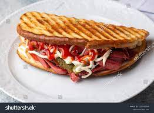
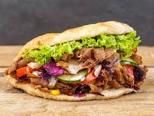
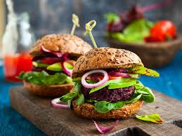
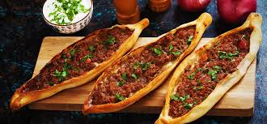
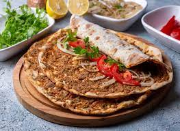
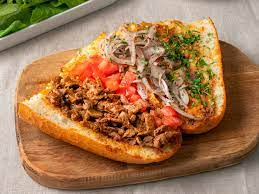

Ayvalık Tostu

Sosis, sucuk, kaşar, turşu, mayonez, ketçap malzemeli karışık olarak yapılır.
Seç
35,99 TL
Döner

İçyağı ve yöresel baharatlarla iyice terbiyelenmiş ve dövülmüş et parçalarının, bir şişin üzerine geçirilerek, dik bir şekilde asıldıkları odun ateşi karşısında pişirildiği bir yemektir.
Seç
34,99 TL
Hamburger

İki dilim yuvarlak sandviç ekmeği arasına yerleştirilen bir köfte, Amerikan peyniri, marul ile yapılan sandviç türüdür.
Seç
25,99 TL
Pide

Mayalı hamurdan yapılan, isteğe göre üzerine yumurta, kıyma, peynir, pastırma vb. konarak pişirilen yiyecektir.
Seç
37,99 TL
Lahmacun

Açılmış hamurun üzerine kıyma, maydanoz, soğan, sarımsak, karabiber ve isot (kırmızı biber) gibi baharatlarla hazırlanan malzeme sürüldükten sonra taş fırında pişirilmesiyle yapılan yiyecektir.
Seç
39,99 TL
Tantuni

Çok küçük kuşbaşı doğranmış et haşlanır. Sac kızdırılarak yağ ve toz biber eklenir. Önceden haşlanmış et bu yağda çevrilir. Pişen et sumaklı ve maydanozlu soğan piyazı, domates ve çeşitli baharatlar ile ekmek arası ya da dürüm yapılır.
Seç
33,99 TL